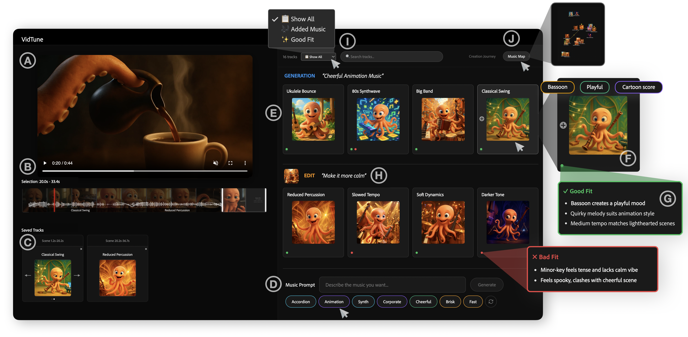
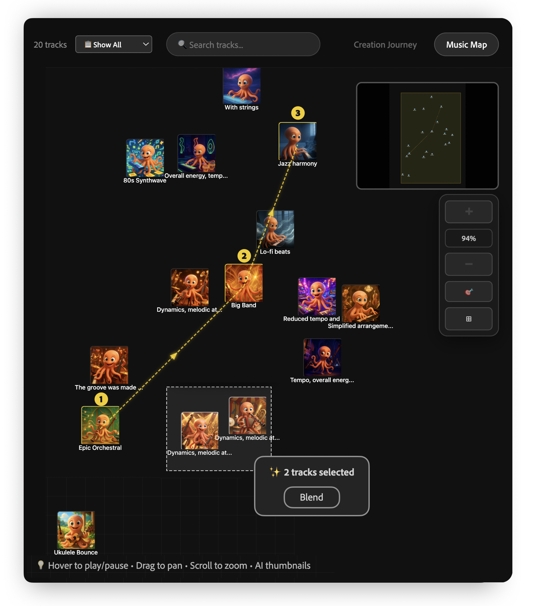
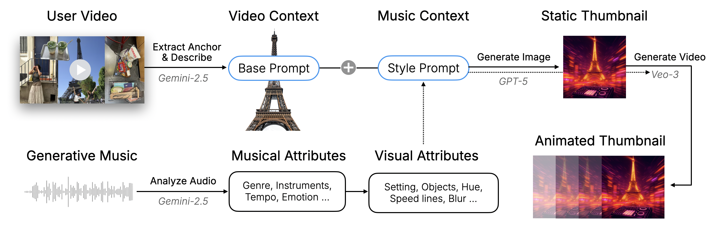

What If You Could Visually Skim Generative Music With Thumbnails?
Music shapes the tone of videos, yet creators find it hard to find soundtracks that match their video's mood and narrative. Recent text-to-music models let creators generate music from text prompts, but our formative study (N = 8) shows creators struggle to construct diverse prompts, quickly review and compare tracks, and understand their impact on the video. We present VidTune, a system that supports soundtrack creation by generating diverse music options from a creator's prompt and producing contextual thumbnails for rapid review. VidTune extracts representative video subjects to ground thumbnails in context, maps each track's valence and energy onto visual cues like color and brightness, and depicts prominent genres and instruments. Creators can refine tracks with natural language edits, which VidTune expands into new generations. In a controlled user study (N = 12) and an exploratory case study (N = 6), participants found VidTune helpful for efficiently reviewing and comparing music options and described the process as playful and enriching.




Each row shows 4 alternative AI-generated music tracks for the same video, illustrated with VidTune’s thumbnails.
Click the speaker icon to unmute a track and compare how different music changes the feel of the video.
@article{huh2026vidtune,
title={VidTune: Creating Video Soundtracks with Generative Music and Contextual Thumbnails},
author={Huh, Mina and Fraser, Ailie C and Li, Dingzeyu and Dontcheva, Mira and Wang, Bryan},
journal={arXiv preprint arXiv:2601.12180},
year={2026}
} 2Adobe Research
2Adobe Research